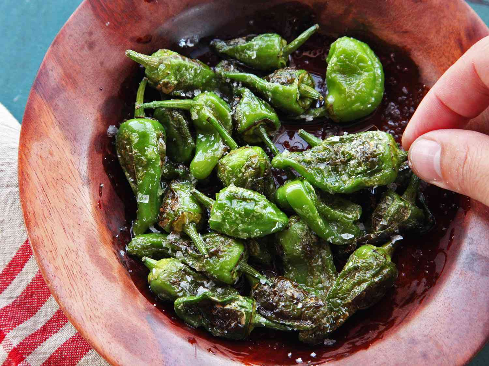

Pimientos de Padron

Padrons are small green peppers, commonly served as a bar snack in Spain. Sweet and smoky tasting, most are mild, but every now and then you'll bite into a wickedly hot one. Grown on our French farm all through the summer.
- Ingredients
- 1 tbsp olive oil
- 500 g padron peppers
- salt to taste
- Steps
- Heat the olive oil in a large frying pan over a high heat. Fry the peppers, stirring frequently, for 5 mins until blistered and wilted. The peppers should be soft and slightly charred.
- Transfer the peppers to a serving plate and season with some sea salt. Serve with dips or as part of a tapas spread.